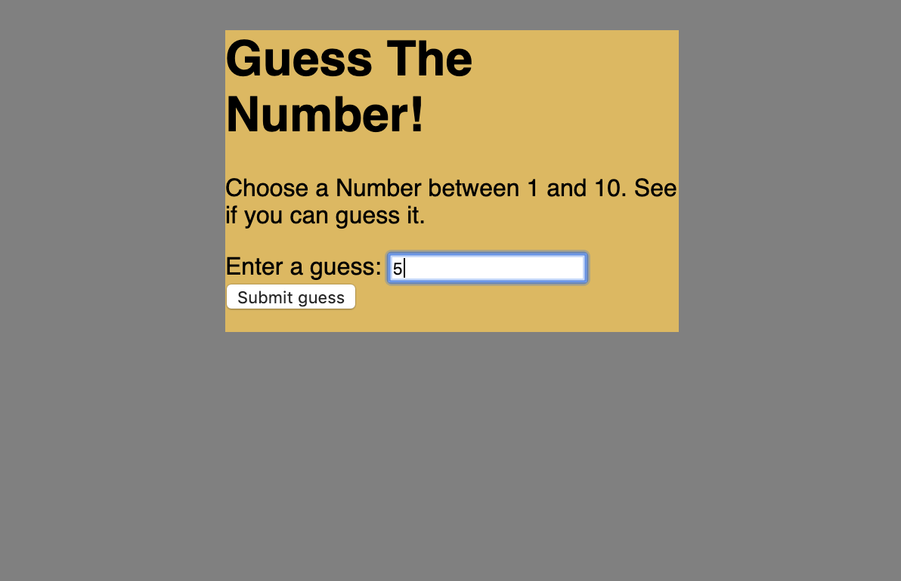

First I wanted to practice shuffling the contents in an array before I started working on the card game. I incorprated the JS console just so at first i can concentrate on learning the formation of the JS code rather than dealing with the visuals. I came across All Things JavaScript, LLC Youtube video which helped me understand a lot better on how the array is shuffled and how the components are put together in a new aray so it can be displayed. At first I had trouble displaying to the console but that was becuase I set up the console.log code incorrectly. I re did the example a few times to really understand what was going on. More info in the code's comments.
Using the same idea that I was incorprating in the console number shuffler I decided to try and use another loop in order to switch the places of numbers. I decided this time to incorprate some light css as well. I found outt hat I can also use a while loop in order to provide the same functionality while looking up directions on StackOverflow. on the Thread called "How can I shuffle an array? [duplicate]" I realized there is multiple ways that I can go forth with shuffling whatever is inside the array. I set this number shuffler using a while loop this time. More info in the code's comments.

Finally I was going to tackle the assignment of making a card game where the cards are shuffled and not duplicated. This took a while to finish up becuase I didnt realize there was so many functions to write when considering the players actions. I first set up the array of cards but then was stuck when deciding what fucntion to start off first. On Medium.com Mr.Hatch wrote a very nice article on how to set up a 21 like game and which fucntions are nessecary to make the game flow. I practiced with their version at first just to get the feel of which functions were needed. Then after undertsanding the games logic I made my own variation of the game where I took out the currency implementation and I added a new button that would start a game along with starting a fresh new game. It was a tough task to make a card game based on array shuffling but after a few practice examples I understood it better. More info in the code's comments.

Example 4
As to attempt the final part of the assignment I decided to use what I understood about shuffling arrays to come up with a new game. I went with a number guessing game becuase I felt like it was a great was to use what I learned in a different way. I found a great article online on geeksforgeeks.com which explains the uses of function such as "document.getElement", "Math.random() ", and "Math.floor()" better. I used this article to help me start off this game by setting up the specific variables needed first then it would count the number of guesses it took the user to find the correct number. Then alliging the user guess with the actuall number to give a personalized message whether they were close by or got the correct number. Using the window pop up instead of the message fucntion to make the text appear on the page was just me trying something new but then while i was testing my program it started getting really annoying.More info in the code's comments.